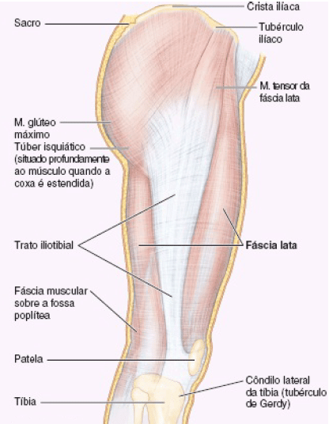
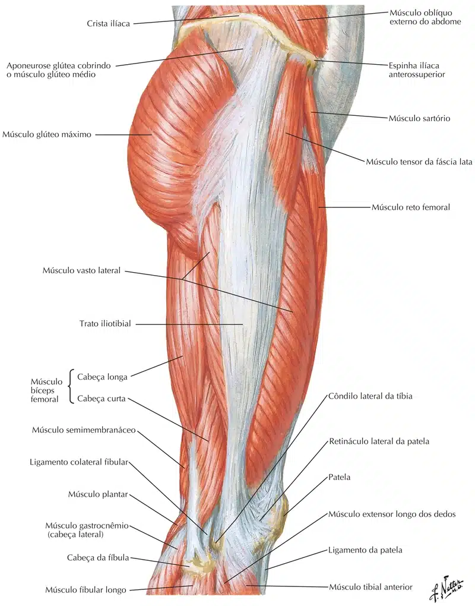

O Trato Iliotibial, é uma estrutura complexa que se origina na parte superior do quadril e se estende até a porção inferior do joelho.
É formado pela união dos músculos:
Glúteo máximo, médio e tensor da fáscia lata forma o trato iliotibial.
A função do Trato Iliotibial é de estabilizar o quadril e o joelho na face lateral, além de auxiliar o músculo quadríceps na extensão do joelho e o músculo isquiotibiais na flexão de joelho.
A fáscia lata tem grandes dimensões porque encerra os grandes músculos da coxa, sobretudo lateralmente, onde é espessada e fortalecida por outras fibras longitudinais de reforço para formar o trato iliotibial.
Essa faixa larga de fibras é a aponeurose conjunta dos músculos tensor da fáscia lata e glúteo máximo.
O trato iliotibial estende-se do tubérculo ilíaco até o côndilo lateral da tíbia (tubérculo de Gerdy).

